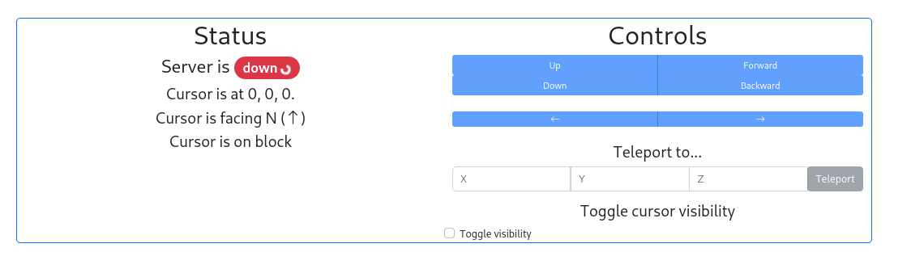
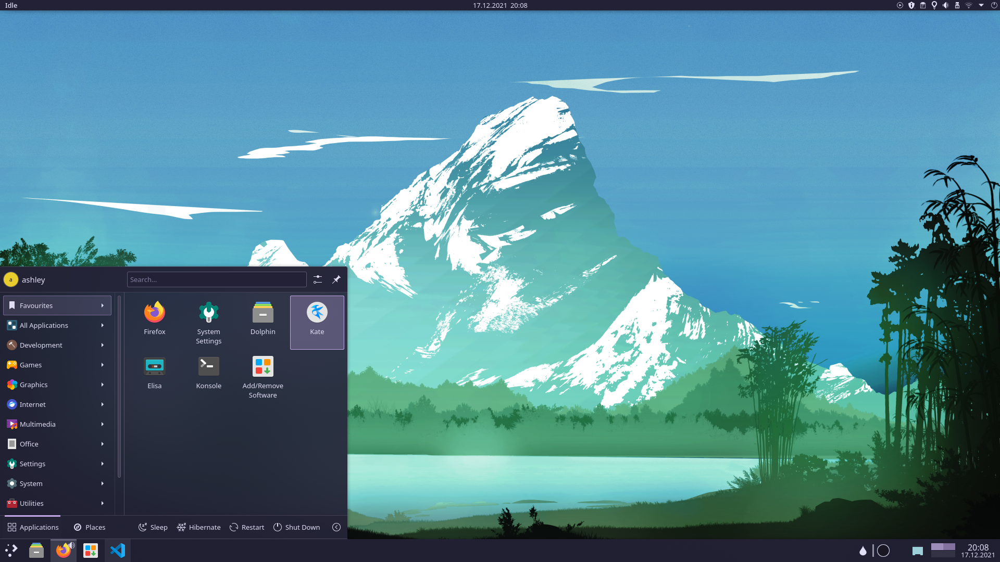

Hi, I'm Ash.
I'm an amateur programmer, mostly interested in Python. This site is a website I wrote to try to remember my webdev courses from school.
I'm a contributor to Rose Pine, a theme for multiple applications. Actually, this site uses the Rose Pine theme with my favorite variant. My projects are pretty varied as I like trying new things.
Please don't look at my source code (it's insecure)Projects
mcpi Control Panel
A control panel for Minecraft using the MCPI library. It mplements a cursor which can move around and draw itself. Made with Flask and Bootstrap. 
This site
In order to understand recursion, one must first understand recursion. Hilarious, I know. I used Pts.js for the background animation, otherwise I wanted to avoid using any 3rd party libraries in order to try and figure things out myself. I can't make the animation sticky for whatever reason but I'm still pretty satisfied with the result.
Rose Pine for KDE Plasma
 I'm the sole maintainer (and possibly the only user too) of this theme. It's unfinished for a good reason - theming with Qt is one of the most painful experiences I've had. I'm kind of hoping it gets forgotten, though it does look pretty nice.